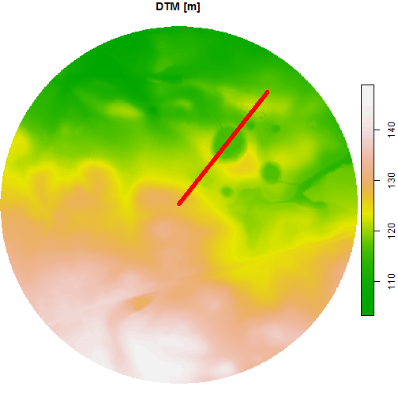

Definition
Digital elevation models are models describing the terrain surface. They are created as a result of the processing of aerial photos, laser scanning (LiDAR), geodetic surveying, or radar interferometry (InSAR). DEMs are one of the key datasets in Geographic Information Systems (GIS) and constitute the basis for many environmental spatial analyses. In addition, they are a source for derived products such as terrain slope and aspect. DEM is the general name for a group of models with different characteristics, including:
- Digital terrain model (DTM) - numerical representation of the terrain with its morphological forms. This model is devoid of any objects above the ground, such as buildings or trees.
- Digital surface model (DSM) - numerical representation of the terrain, including objects on its surface, such as buildings and trees.

Wikimedia Commons, the free media repository, https://commons.wikimedia.org/w/index.php?title=File:DTM_DSM.svg&oldid=475779479 (accessed October 7, 2020).
{kind=link}
The properties of the DEMs:
- Format - we can distinguish three main structures: GRID (point / cell), TIN (irregular topological triangle network) and contour lines (vector). Currently, the most used format is GRID.
- Accuracy - is related to the vertical measurement error.
- Spatial resolution - is related to the size of the smallest object that can be detected by the sensor and is determined by the size of the image cell (pixel). The larger the cell, the more generalized form of the terrain it presents.
Purpose
The purpose of this vignette is to determine the elevation of the ground surface and objects in the selected area. The source of the data will be Airborne Laser Scanning already processed to the GRID format.
Analysis
Our analysis area is the Morasko Meteorite nature reserve located in the Greater Poland voivodeship. It was established in 1976 in order to protect the area of impact craters, which, according to researchers, were formed in the fall of the Morasko meteorite about 5,000 years ago. In addition, the oak-hornbeam forest with rare species of plants (lilium martagon, ceratophyllum submersum) and birds (european nightjar, black woodpecker) is protected.
Vector data
The centroid (geometric center) of the Morasko Meteorite nature reserve has X = 16.895 and Y = 52.487 coordinates in World Geodetic System 1984 (EPSG 4326). Let’s start by creating this point with the sf package.
morasko = st_point(c(16.895, 52.489))
morasko = st_sfc(morasko, crs = 4326) # set coordinate system
morasko## Geometry set for 1 feature
## geometry type: POINT
## dimension: XY
## bbox: xmin: 16.895 ymin: 52.489 xmax: 16.895 ymax: 52.489
## geographic CRS: WGS 84## POINT (16.895 52.489)Now our point is embedded in space (has a spatial reference). In the next step, let’s create an approximate zone that will include the area of the reserve. The function st_buffer() will be used for this. Before this operation, we need to transform the coordinate system to a system with metric units, e.g. Poland CS92 (EPSG 2180), using st_transform() function.
morasko = st_transform(morasko, crs = 2180)
morasko_buffer = st_buffer(morasko, dist = 400)We have created a buffer with a radius of 400 meters. Let’s visualize it.

Of course, the area shown above is not exactly the reserve area. The exact area can be determined from the polygon layer as in orthophotomap example using the General Geographic Database.
Raster data
Now we can search for available elevation data for this area using the DEM_request() function (it is analogous to the ortho_request() function). The only argument of the function is our reserve buffer. Note that DEM_request() takes data frame as input, and currently the morasko_buffer object is a list, so we need to convert it first.
morasko_buffer = st_sf(morasko_buffer) # set as data frame
req_df = DEM_request(morasko_buffer)Let’s check the obtained results.
# display the first 10 rows and the first 5 columns
req_df[1:10, 1:5]## sheetID year format resolution avgElevErr
## 1 N-33-130-D-b-1 2011 ASCII TBD 25.0 m 0.9
## 2 N-33-130-D-b-1-1 2012 ASCII XYZ GRID 0.5 m 0.1
## 3 N-33-130-D-b-1-1 2012 ARC/INFO ASCII GRID 0.5 m 0.1
## 4 N-33-130-D-b-1-1 2012 ASCII XYZ GRID 1.0 m 0.1
## 5 N-33-130-D-b-1-1 2012 ARC/INFO ASCII GRID 1.0 m 0.1
## 6 N-33-130-D-b-1-1-1-4 2012 LAS 12 p/m2 0.1
## 7 N-33-130-D-b-1-1-2-3 2012 LAS 12 p/m2 0.1
## 8 N-33-130-D-b-1-1-2-4 2012 LAS 12 p/m2 0.1
## 9 N-33-130-D-b-1-1-3-2 2012 LAS 12 p/m2 0.1
## 10 N-33-130-D-b-1-1-4-1 2012 LAS 12 p/m2 0.1We have received metadata with many types of data of different formats, timeliness, resolution, and accuracy. For our analysis, we need digital terrain model (DTM) and digital surface model (DSM) in the “ARC/INFO ASCII GRID” format. Let’s make data selection by creating two tables and combining them together.
req_df_DTM = req_df[req_df$format == "ARC/INFO ASCII GRID" &
req_df$product == "DTM" &
req_df$year == 2019, ]
req_df_DSM = req_df[req_df$format == "ARC/INFO ASCII GRID" &
req_df$product == "DSM" &
req_df$year == 2019, ]
# combine data tables
req_df = rbind(req_df_DTM, req_df_DSM)
req_df[, 1:5]## sheetID year format resolution avgElevErr
## 30 N-33-130-D-b-1-1 2019 ARC/INFO ASCII GRID 1.0 m 0.1
## 29 N-33-130-D-b-1-1 2019 ARC/INFO ASCII GRID 0.5 m 0.1Now we can download the data using the tile_download() function with our filtered data frame as input.
# 168.7 MB
tile_download(req_df, outdir = "./data")## 1/2
## 2/2Processing
Let’s load the downloaded numerical models using the read_stars() function from the stars package, which allows working on spatiotemporal arrays. We have two files, one represents DTM and second represents DSM.
# load data
DTM = read_stars("data/73044_917579_N-33-130-D-b-1-1.asc", proxy = FALSE)
DSM = read_stars("data/73043_917495_N-33-130-D-b-1-1.asc", proxy = FALSE)
# name raster
names(DTM) = "DTM"
names(DSM) = "DSM"
# set coordinate system
st_crs(DTM) = 2180
st_crs(DSM) = 2180You probably noticed the four-fold difference in their sizes. It is due to the difference between their cells resolutions. We need to unify them to a common resolution to be able to combine them into one stack. It is much better to use a lower resolution than to increase it, because we cannot get more information and the processing will be faster. Let’s use the st_warp() function to do this.
DSM = st_warp(DSM, dest = DTM, cellsize = 1)Now, both models have the same dimensions (the number of rows and columns) and spatial resolution. Thus, we can combine them into one object (DEM).
## [1] 2Now we have a DEM object that consists of two attributes (DTM and DSM). In fact, both attributes contains same type of data as they are representing elevation. Therefore, we can collapse the attributes into a new dimension. Let’s do that using st_redimension().
DEM = st_redimension(DEM)
names(st_dimensions(DEM))[3] = "elev" # name new data dim
st_dimensions(DEM)## from to offset delta refsys point values x/y
## x 1 2188 355733 1 ETRS89 / Poland CS92 TRUE NULL [x]
## y 1 2379 517029 -1 ETRS89 / Poland CS92 TRUE NULL [y]
## elev 1 2 NA NA NA NA DTM, DSMAfter this operation, our elevation attribute consists of the DTM and DSM layers (dimensions). Then let’s crop the rasters to our buffer.
DEM = st_crop(DEM, morasko_buffer)Let’s check what the result looks like.
plot(DEM, col = terrain.colors(99, alpha = NULL))
In the first quadrant of the circle, we can see five smaller circles. These are the craters formed after the impact of the Morasko meteorite. The largest fragment found weighs 272 kg and it is the largest meteorite found in Poland. The collection of found meteorites can be seen at the Earth Museum in Poznań.
Let’s calculate the crater width using the terrain transverse profile. We can use our centroid and add a second example point 30 degrees towards N. Next, we connect these points into a line (st_linestring()) and then sample this line every 1 m (st_line_sample()), because our DEM has this resolution. As a result, we get one complex geometry (MULTIPOINT), which we have to convert into a simple geometry (POINT) consisting of many points. The function st_cast() is used for this.
pts_matrix = matrix(c(357121.7, 515765.5,
357321.2, 516017.9),
ncol = 2, byrow = TRUE)
line = st_sfc(st_linestring(pts_matrix), crs = 2180)
line = st_line_sample(line, density = 1)
line = st_cast(line, "POINT")
# plot DTM (first layer)
plot(DEM[, , , 1], main = "DTM [m]", col = terrain.colors(99, alpha = NULL),
reset = FALSE)
plot(line, col = "red", add = TRUE)
In the last step, we extract the elevation values for these points using st_extract().
# take elevation from DTM and DSM layers
elev_line = st_extract(DEM, line)[[1]]
colnames(elev_line) = c("DTM", "DSM")Now we can see how our transverse profile looks like.
# use 'dev.off()' to reset previous plot
plot(elev_line[, "DTM"], type = "l", main = "Digital terrain model",
ylab = "Elevation [m]", xlab = "Distance [m]", col = "red")
abline(v = c(126, 219), col = "blue")
The largest width of the impact crater is about 90 m.
Okay, we checked the terrain. In the last step, let’s examine the height of the objects on it. For this purpose, we calculate the height of the trees by subtracting the DTM from the DSM. The product of this difference is called normalized DSM, because it takes the terrain elevation as a reference.
calc = function(DEM) (DEM[2] - DEM[1])
nDSM = st_apply(DEM, MARGIN = c("x", "y"), FUN = calc)
plot(nDSM, main = "Trees height [m]",
col = hcl.colors(9, palette = "Greens", rev = TRUE))